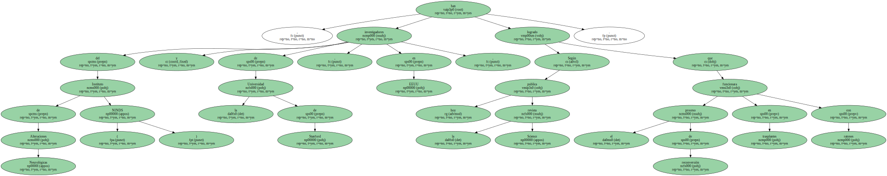
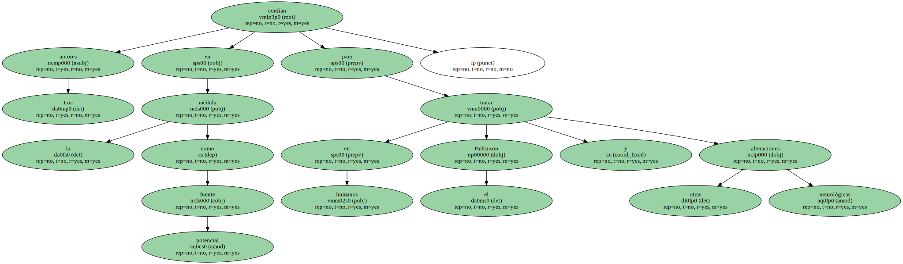
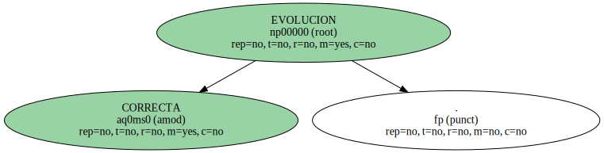
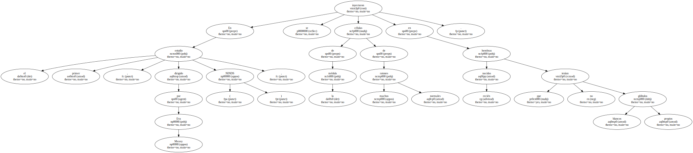
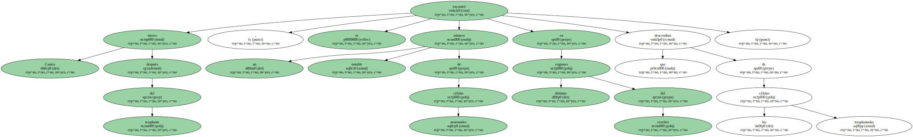
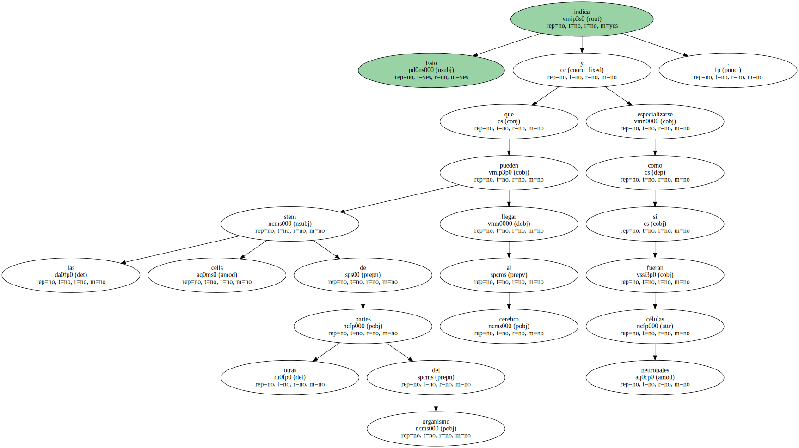
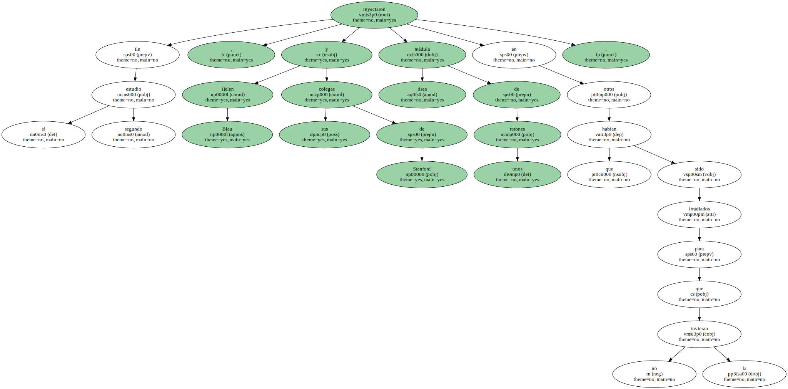
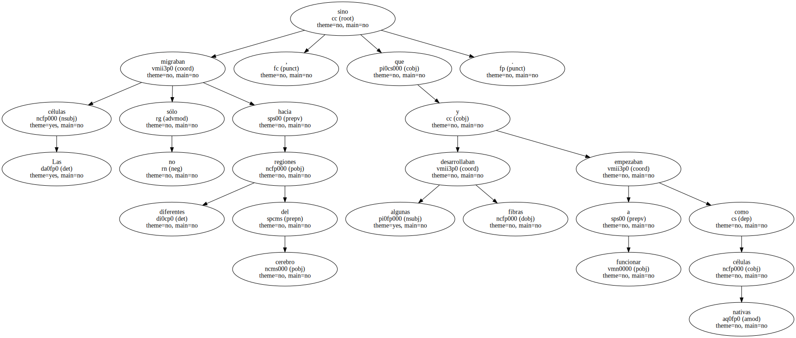

Las células de la médula ósea se acaban de revelar como una excelente fuente , menos conflictiva y más abundante que las células embrionarias , para fabricar a partir de ellas neuronas cerebrales , un tejido que no se regenera en caso de deterioro.
Según publica hoy la revista Science , investigadores del Instituto de Alteraciones Neurológicas ( NINDS ) y de la Universidad de Stanford , en EEUU , han logrado que el proceso de reconversión funcionara en trasplantes con ratones.
Los autores confían en la médula como fuente potencial para tratar en humanos el Parkinson y otras alteraciones neurológicas.
Trabajos anteriores habían demostrado , pero sólo en cultivos de laboratorio , que las células de la médula podían funcionar como stem cells ( células pluripotenciales ) y derivar hacia neuronas.

Una de las grandes novedades de ahora es que se ha realizado el mismo proceso , pero en el interior de un ser vivo.
CORRECTA EVOLUCION.
En el primer estudio , dirigido por Eva Mezey ( NINDS ) , se inyectaron células de la médula de ratones machos normales en hembras recién nacidas que no tenían glóbulos blancos propios.
Cuatro meses después del trasplante , se encontró un notable número de células neuronales en distintas regiones del cerebro que descendían de las células trasplantadas.
Esto indica que las stem cells de otras partes del organismo pueden llegar al cerebro y especializarse como si fueran células neuronales.
En el segundo estudio , Helen Blau y sus colegas de Stanford inyectaron médula ósea de unos ratones en otros que habían sido irradiados para que no la tuvieran.
Las células no sólo migraban hacia diferentes regiones del cerebro , sino que algunas desarrollaban fibras y empezaban a funcionar como células nativas.
